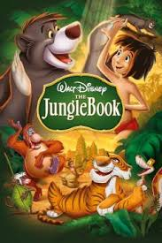
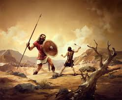

|  |
maugli film |
ეს ფილმი არის ერთ დაკარგულ ბიჭზე რომელიც ჯუნგლებში დაიკარგა |
|  |
daviti da goliati |
დავითისა და გოლიათის შეხვედრის ყურებისას, კრისს გამბედაობა ემატება იმისათვის, რომ საკუთარ „გოლიათებს“ დაუპირისპირდეს. |
 |
elvini da taxvebi |
მომღერალი ციყვები დადიან გასტროლებზე და დიდ წარმატებებს აღწევენ |
 |
mezobeli datvebi |
ერთ ჩვეულებრივ ღამეს ტყეში ხანძრის დროს უჩინარდება დედა დათვი, რომელსაც ძალიან უყვარდა თავისი შვილები ბრიარი და ბრემბლი. მრავალი წლის შემდეგ, ახალგაზრდა ხის მჭრელ ვიკის თან მიჰყავს ბრიარი და ბრემბლი მოგზაურობაში, რათა რობოტების კვლევითი ინსტიტუტის მოინახულოს. |